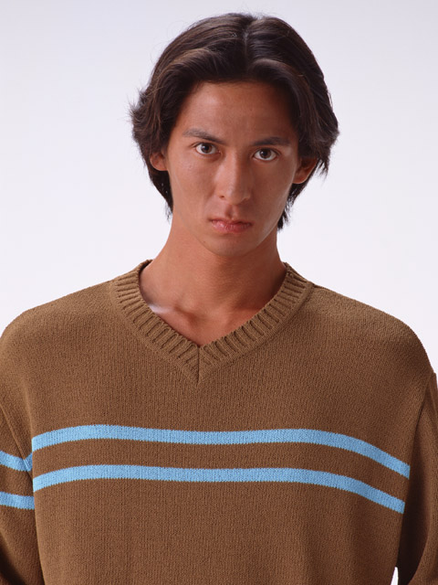

アーティスト一覧
彫刻家。その後30代から彫刻家として活動
代表作に「ハルトシュラ」(彫刻)「エイケツノアサ」(彫刻)
画家。幼少期から水墨画に触れる 20代の頃に海外に渡り、知見を広める、
代表作にヒカリノスアシ」「なめとやまのくま」(水墨画)
写真家、デジタルアーティスト。イーハトーブ県モーリオカ市出身
雄大な風景を撮影し続けている。代表作に「ぎんがをつつむとうめいないし」(デジタルアート)

作家、劇作家。岩手の風土色強い、シナリオが持ち味。
代表作に「らすちじんきょうかい」(演劇)「ぐすこーぶどりのでんき」(演劇)

Copyright(c)2025 TYUMONNOOOIRYOURIYA All Rights Reserved2025年7月16日 10:37